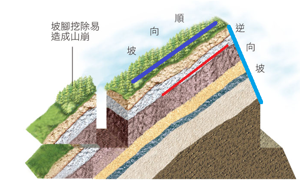

1. 地震：臺灣處在歐亞板塊與菲律賓海板塊互相擠壓位置，地震(逆斷層)頻繁造成房屋倒塌、坡地崩塌和土壤液化等災害。
2. 洪水：短時間內大量降水，引起河水暴漲而溢出河道氾濫的現象。原因包含：
(1) 極端降雨（颱風、梅雨）造成河川暴漲。
(2) 人為開發（都市水泥鋪面、水土保持破壞）導致地表逕流快、排水系統負荷超載。
洪水氾濫時，河水搬運力強，將大量的礫石、泥沙搬運到下游沉積，在河道兩側形成氾濫平原。
3. 山崩：
(1) 岩石或土壤受到重力作用，快速向下滑落。通常發生在大雨過後、地勢陡峭或順向坡。
(2) 雨水的雙重效應：滲入地下增加土體重量，同時減少摩擦力，使岩層易滑落。
＊當坡面與岩層傾斜面方向一致時稱為順向坡；不一致時稱為逆向坡。
4. 土石流：
(1) 山崩的一種，指大小不一的岩塊與泥砂，混合大量水分成為流體狀，向下快速流動。
(2) 具有流動性，破壞力極強，水是關鍵潤滑劑。
★山崩是塊體滑動；土石流是流體狀態，速度與破壞力通常更強。
地震、颱風、洪水、山崩與土石流原本是大自然的現象，但若加上人類過度開發，經常導致災害問題更加複雜和嚴重。
1. (單選) 大雨過後容易發生山崩，主要原因除了增加土體重量外，還有什麼？
A. 增加岩層間的摩擦力2. (是非) 當坡面方向與岩層傾斜面方向一致時（順向坡），相較於逆向坡，通常更不容易發生滑落。
正確3. (多選) 下列哪些因素會加劇「洪水」災害的發生？
都市水泥鋪面比例增加4. (填空) 土石流與一般山崩的不同點，在於土石流混合了大量水分，呈現「」狀態。